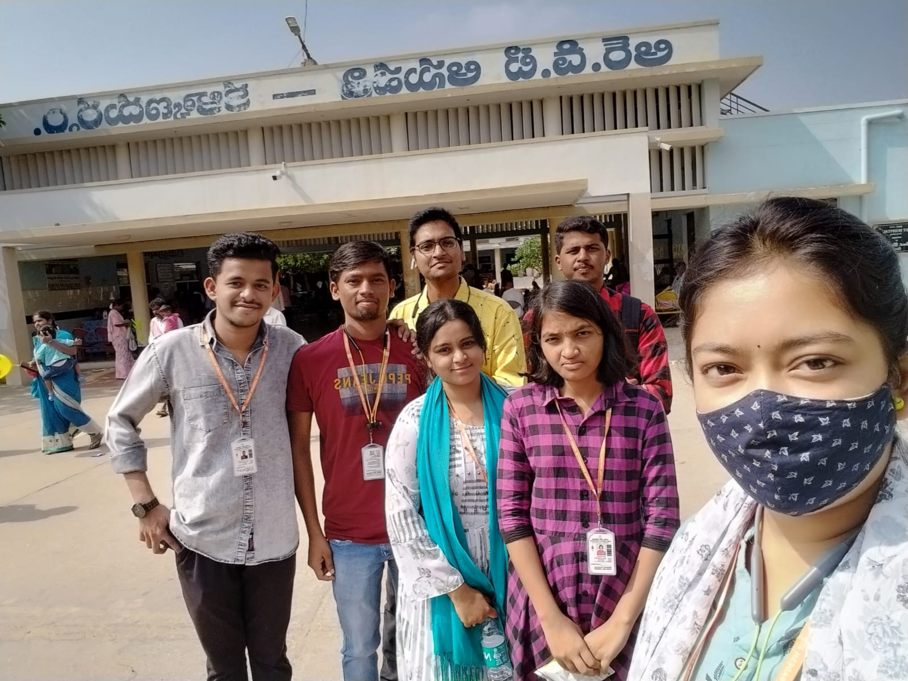

Kalyandurg RDT Rural Hospital

Services & Facilities
Departments in the Hospital:
Types of patients in the RDT hospital
Charge Rs. 100 for X ray in the hospital
Medical Ward
Paediatric Centre
The RDT Hospital has undertaken a commendable initiative to ensure the health and well-being of children within the community. Recognizing the significance of preventive healthcare, the hospital has appointed dedicated doctors to administer polio drops to children up to 15 years of age. This strategic approach aligns with global efforts to eradicate polio and underscores the hospital's commitment to proactive health interventions.
Polio, a preventable and potentially debilitating disease, has been the focus of extensive vaccination campaigns worldwide. By appointing doctors specifically for administering polio drops, the RDT Hospital actively contributes to this global health endeavor. The emphasis on reaching children up to 15 years old reflects a comprehensive approach, recognizing the importance of continued immunization efforts throughout childhood and adolescence. The administration of polio drops is a crucial aspect of public health initiatives, aiming to create immunity against the poliovirus. These efforts not only protect individual children from the risk of polio but also contribute to community-wide immunity, ultimately working towards the eradication of the disease.
The engagement of doctors in this initiative speaks to the hospital's commitment to delivering healthcare services that go beyond traditional medical treatment. Preventive measures, such as vaccinations, are key components of promoting overall community health. The presence of dedicated healthcare professionals underscores the hospital's dedication to reaching vulnerable populations and ensuring that children receive essential vaccinations for their well-being.